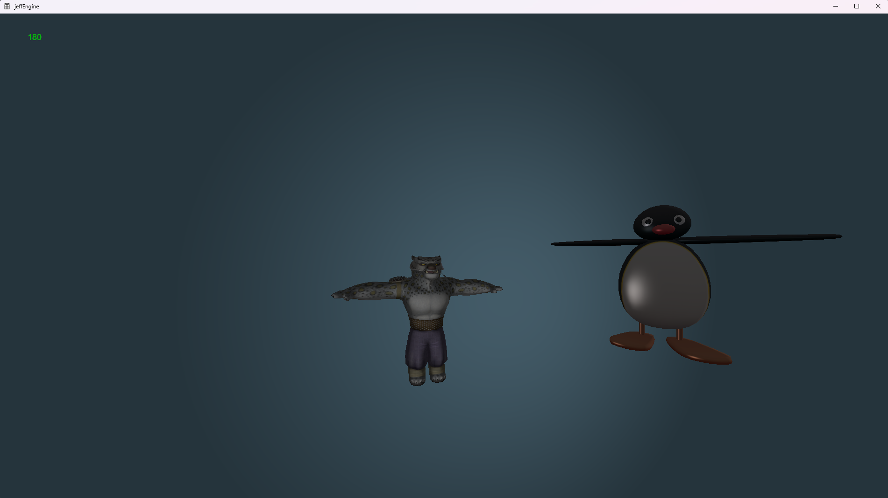
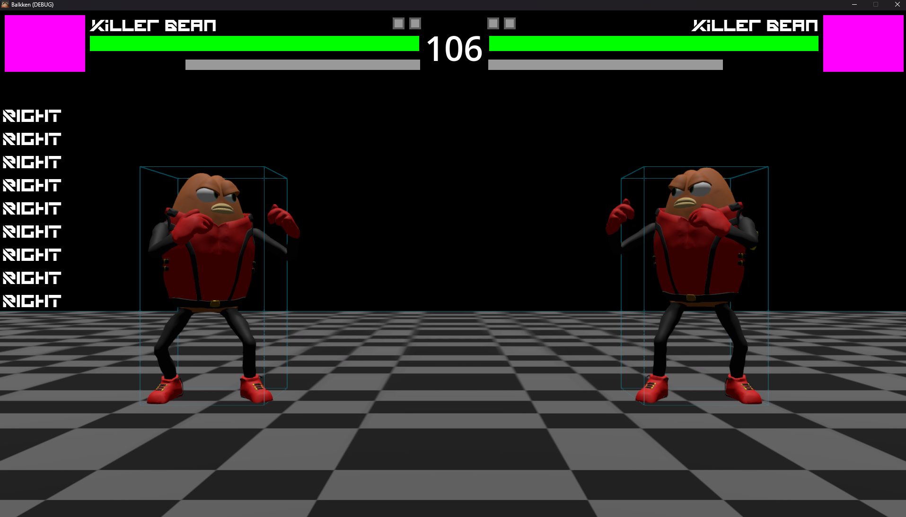
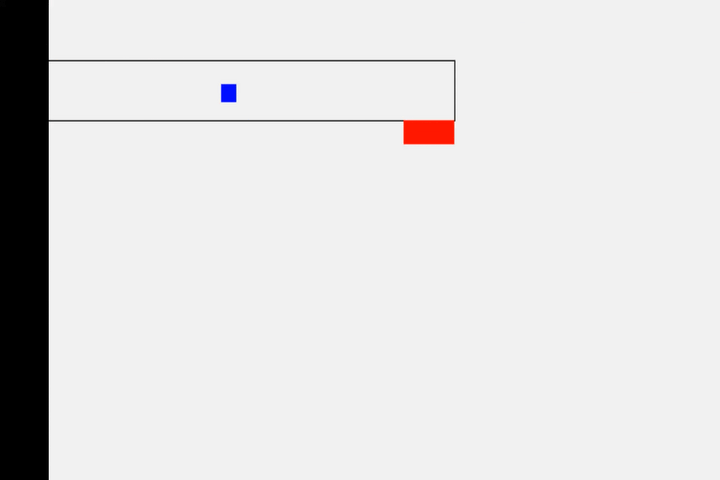
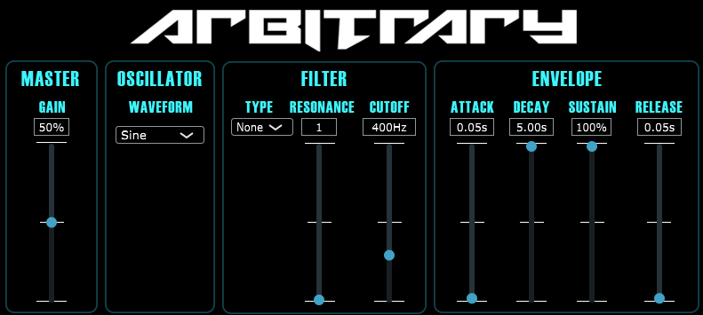

Portfolio
jeffVisualizer
Began and finished in 2024 for this webpage. Made in C# with no libraries. It uses the FFT algorithm and some further signal processing to decompose the frequency spectrum of a .wav file, and then visualizes it using bars (like the sorting demonstration).
A medley including snippets from songs I have produced.
jeffEngine

A test scene rendered in jeffEngine. The green number in the top left is the current framerate. Note the Phong shading in the backdrop, and the specular highlights on Pingu from Phong illumination.
Currently in progress since 2024. A game engine providing both 2D and 3D graphics, audio, networking, and physics processing.
It uses the Win32 and Direct3D 11 APIs to leverage GPU hardware acceleration. The 3D graphics are the main focus, using Phong illumination and shading algorithms, but
physically-based rendering is planned. Programmed in C++20, with High Level Shading Language (HLSL) Model 5.0 as well where relevant.
ChatApp
Peer-to-peer networking demonstration written in C that makes use of UDP hole punching for network address translation (NAT) traversal.Balkken

Gameplay in Balkken looks something like this.
A traditional fighting game with many non-original characters. Made in Godot with GDScript.
autoluka
Demonstration of the program's output with one speaker, converted to a looping GIF. At a rendering speed of 3200 frames per second, it would take only a few seconds to produce an hour-long video. The required inputs in this case would be one
audio file, one image for silence, and one image for talking (or any other noise that reaches the threshold).
Made for podcasting in 2024, it creates a video that visually indicates when certain people are talking (like on Discord, but with customizable images). It does require separate tracks for each speaker to be able to detect spikes in loudness,
however the audio analyzer (which also reads the input files) was programmed entirely from scratch in C without external libraries. The final assembler was written in Python and uses FFmpeg to encode the output video.
wikibook
An audiobook generated by the extension. The Wikipedia article named "Chemical element" was used as an example.
A chrome extension made in 2023 that turns Wikipedia articles into audiobooks with the click of a button. The extension itself was written in JavaScript, and it interfaces with a separate desktop app written in Python
in order to leverage GPU power for the AI text-to-speech.
jefsort

The Java version of jefsort. In order, the algorithms are bubble sort, insertion sort, quicksort, and counting sort.
A visualized demonstration of various sorting algorithms written in 2022 using C#. I also made different versions in Java and C++, which included the following algorithms: bubble sort,
insertion sort, quicksort, counting sort, and bogosort.
jeffbrain

Training in progress (~20 seconds played at 2.5x speed). Notice how over time, the AI learns to move to the right.
Began in 2020. A basic neural network written in C# that navigates a maze, trained using a genetic algorithm with backpropagation and gradient descent. The goal was to have it navigate any maze,
even if it had never seen it before, which a basic neural network would suffice for. It could also be trained on the CPU due to a low number of neurons.
Arbitrary

How the program appears in a digital audio workspace.
An example song snippet to demonstrate Arbitrary's capabilities.
Made in 2021 using C++, it makes use of the JUCE framework to create a functioning subtractive synthesizer, available as a VST2/VST3 plugin.
The waveforms that it can generate using its main oscillator are the typical analog ones along with a white noise generator. It has low-pass, band-pass, and high-pass filters with adjustable cutoff frequency and resonance.
It also has an amplitude envelope.